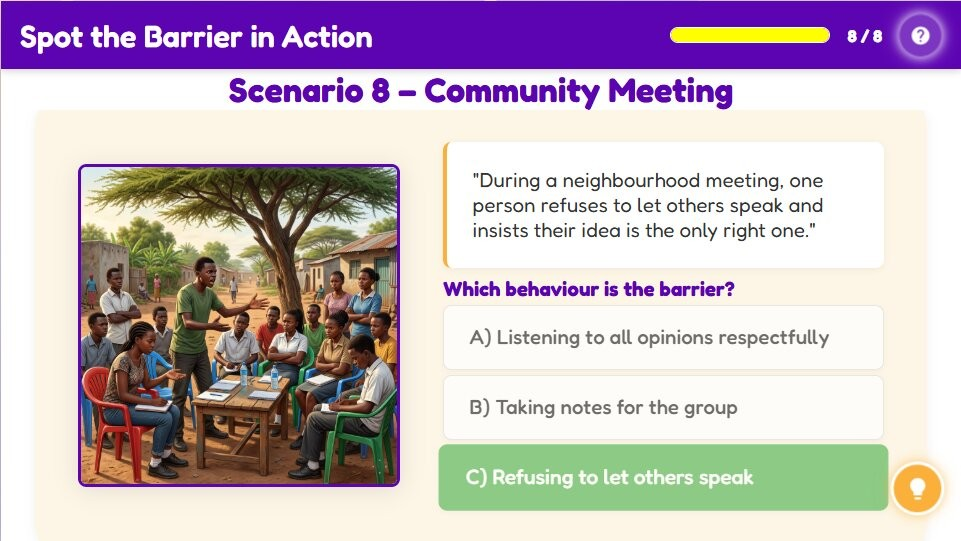

Spot the Barrier in Action
Spot the Barrier in Action
Which behaviour is the barrier?
Activity Conclusion

Lesson Complete
Key Takeaways
| Aspect | Detail |
|---|---|
| Jealousy & Gossip | Barriers include jealousy, gossip, and poor communication. |
| Misunderstandings | Misunderstandings and poor communication hinder connection. |
| Lack of Empathy | Lack of empathy makes it hard to relate to others. |
| Unfairness & Disrespect | Unfairness and lack of respect create resentment. |
| Unresolved Conflicts | Unresolved conflicts can damage relationships over time. |
| Awareness & Prevention | Being aware of barriers helps us manage and prevent conflict. |
Activity Introduction
It is time to put your barrier-spotting skills to the test! In each scenario, you will see a real-life situation from school, home, or the community. Your mission is to spot the behaviour that acts as a barrier to healthy relationships. Read carefully, think about how the people might feel, and choose wisely. Let us begin!
Learner Instructions
- Read the scenario carefully and imagine yourself in that situation.
- Think about how the people might feel in the scene.
- Select the behaviour that acts as a barrier to building a healthy relationship.
- After your choice, read the feedback to understand why it is correct or incorrect.
- Continue through all the scenarios to sharpen your barrier-spotting skills.